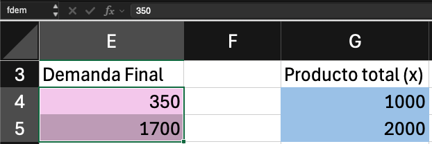
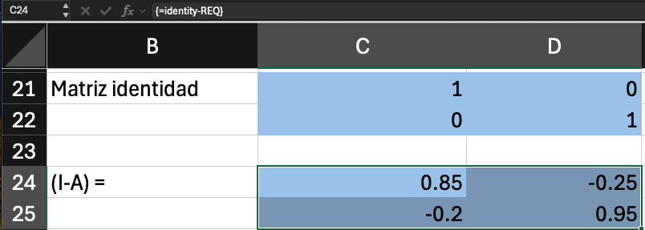
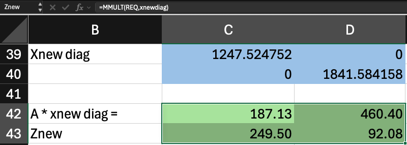
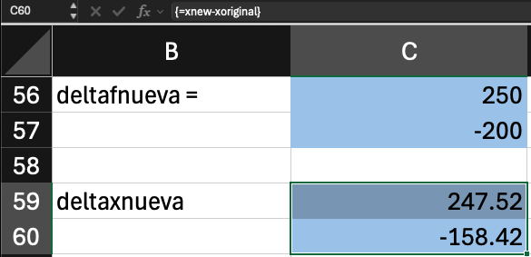

Temas a tratar
- El modelo básico.
- Coeficientes técnicos y matriz de Leontief.
- Cambios en la demanda final.
Modelo básico, coeficientes y escenarios de demanda
Economista / Consultor FMI
Descargar los archivos de ejemplo:
| Excel: | modelo-insumo-producto.xlsx |
| R: | modelo-insumo-producto.R |
Una economía de dos sectores, agricultura y manufacturas, se describe con un cuadro de flujos entre industrias (Miller y Blair, 2022). Cada fila muestra a quién vende un sector; cada columna muestra qué compra para producir.
| Agricultura | Manufacturas | Demanda final | Producto total | |
|---|---|---|---|---|
| Agricultura | 150 | 500 | 350 | 1000 |
| Manufacturas | 200 | 100 | 1700 | 2000 |
| Pagos a factores | 650 | 1400 | 1100 | |
| Total insumos | 1000 | 2000 | 3150 |
El elemento \(z_{ij}\) de la matriz \(\mathbf{Z}\) muestra las ventas que hace la fila \(i\) a la columna \(j\), o bien las compras que hace la columna \(j\) a la fila \(i\).
La demanda final del cuadro forma el vector \(\mathbf{f}\) y el producto total forma el vector \(\mathbf{x}\).
Notación
\[ \bbox[#F2CEEF,3px]{\mathbf{f}} = \begin{bmatrix} 350 \\ 1700 \end{bmatrix} \qquad \bbox[#A6C9EC,3px]{\mathbf{x}} = \begin{bmatrix} 1000 \\ 2000 \end{bmatrix} \]
En Excel

Para pasar de flujos a coeficientes se necesita una matriz diagonal con el producto total \(\mathbf{x}\) de cada sector, \(\widehat{\mathbf{x}}\).
El coeficiente técnico \(a_{ij}\) es la cantidad que el sector \(j\) compra al sector \(i\) por cada unidad monetaria que produce. Se obtiene al dividir cada flujo entre el producto total del sector comprador (Miller y Blair, 2022).
\[ a_{ij} = \frac{\bbox[#B5E6A2,3px]{z_{ij}}}{\bbox[#A6C9EC,3px]{x_j}} \qquad \Longleftrightarrow \qquad \mathbf{A} = \bbox[#B5E6A2,3px]{\mathbf{Z}}\bbox[#A6C9EC,3px]{\widehat{\mathbf{x}}}^{-1} \]
Posmultiplicar por la inversa de la matriz diagonal divide cada columna de \(\mathbf{Z}\) entre el producto \(\mathbf{x}\) del sector correspondiente. Despejando, \(\mathbf{Z} = \mathbf{A}\widehat{\mathbf{x}}\).
| Agricultura | Manufacturas | |
|---|---|---|
| Agricultura | 0.15 | 0.25 |
| Manufacturas | 0.20 | 0.05 |
El producto de cada sector satisface las compras de los demás sectores y a la demanda final:
\[ \bbox[#A6C9EC,3px]{\mathbf{x}} = \mathbf{Z}\mathbf{i} + \bbox[#F2CEEF,3px]{\mathbf{f}} \]
Los coeficientes permiten escribir las ventas a otros sectores en función del producto. Como \(\mathbf{Z} = \mathbf{A}\widehat{\mathbf{x}}\) y multiplicar una matriz diagonal por el vector sumatorio devuelve el vector original, \(\widehat{\mathbf{x}}\mathbf{i} = \mathbf{x}\) (Miller y Blair, 2022):
\[ \mathbf{Z}\mathbf{i} = \mathbf{A}\widehat{\mathbf{x}}\mathbf{i} = \mathbf{A}\mathbf{x} \]
Sustituyendo en la primera ecuación, el modelo queda expresado solo con \(\mathbf{A}\), \(\mathbf{x}\) y \(\mathbf{f}\):
\[ \bbox[#A6C9EC,3px]{\mathbf{x}} = \mathbf{A}\bbox[#A6C9EC,3px]{\mathbf{x}} + \bbox[#F2CEEF,3px]{\mathbf{f}} \]
Queremos \(\mathbf{x}\) en función de \(\mathbf{f}\). Pasamos \(\mathbf{A}\mathbf{x}\) restando al lado izquierdo:
\[ \mathbf{x} - \mathbf{A}\mathbf{x} = \mathbf{f} \]
Para factorizar \(\mathbf{x}\) no basta con escribir \((1 - \mathbf{A})\mathbf{x}\), porque no se puede restar un número a una matriz. Por eso se usa un truco: \(\mathbf{x} = \mathbf{I}\mathbf{x}\), ya que la identidad no altera al vector. Así ambos términos son matriz por vector y se puede factorizar:
\[ \mathbf{I}\mathbf{x} - \mathbf{A}\mathbf{x} = \mathbf{f} \quad \Rightarrow \quad (\mathbf{I} - \mathbf{A})\mathbf{x} = \mathbf{f} \]
La división de matrices no está definida, así que se premultiplican ambos lados por la inversa de \((\mathbf{I} - \mathbf{A})\). Como \((\mathbf{I} - \mathbf{A})^{-1}(\mathbf{I} - \mathbf{A}) = \mathbf{I}\) y \(\mathbf{I}\mathbf{x} = \mathbf{x}\):
\[ \bbox[#A6C9EC,3px]{\mathbf{x}} = (\mathbf{I} - \mathbf{A})^{-1}\bbox[#F2CEEF,3px]{\mathbf{f}} = \bbox[#F7C7AC,3px]{\mathbf{L}}\bbox[#F2CEEF,3px]{\mathbf{f}} \]
\[ \bbox[#F7C7AC,3px]{\mathbf{L}} = (\mathbf{I} - \mathbf{A})^{-1} \]
\(\mathbf{L}\) es la matriz inversa de Leontief. Es el mismo problema del sistema de ecuaciones lineales de la presentación anterior, con \(\mathbf{I} - \mathbf{A}\) como matriz de coeficientes y \(\mathbf{f}\) como vector de constantes, resuelto con la inversa (Miller y Blair, 2022).
Dice cuánto debe producir cada sector, directa e indirectamente, para satisfacer la demanda final.
Para restar \(\mathbf{A}\) necesitamos una identidad de la misma dimensión.
Notación
\[ \mathbf{I} - \mathbf{A} = \begin{bmatrix} 0.85 & -0.25 \\ -0.20 & 0.95 \end{bmatrix} \]
En Excel

Un modelo está calibrado cuando reproduce los datos con los que se construyó. Si \(\mathbf{L}\)\(\mathbf{f}\) devuelve el producto total observado \(\mathbf{x}\), la matriz \(\mathbf{A}\) y la matriz \(\mathbf{L}\) son consistentes con el cuadro original.
Con el modelo calibrado se pueden hacer preguntas de escenarios.
Si la demanda final de los productos agrícolas se incrementa a USD 600 el siguiente año y la de las manufacturas baja a USD 1500, ¿cuánto producto de los dos sectores sería necesario para satisfacer esta nueva demanda?
\[ \bbox[#F2CEEF,3px]{\mathbf{f}_{nueva}} = \begin{bmatrix} 600 \\ 1500 \end{bmatrix} \qquad \bbox[#A6C9EC,3px]{\mathbf{x}_{nueva}} = \bbox[#F7C7AC,3px]{\mathbf{L}}\bbox[#F2CEEF,3px]{\mathbf{f}_{nueva}} \]
La matriz \(\mathbf{L}\) no cambia: se asume que la tecnología, es decir los coeficientes de \(\mathbf{A}\), es la misma. Solo cambia la demanda.
Notación
\[ \bbox[#B5E6A2,3px]{\mathbf{Z}_{nueva}} = \begin{bmatrix} 187.13 & 460.40 \\ 249.51 & 92.08 \end{bmatrix} \]
En Excel

Los pagos a factores se obtienen como residuo: el producto de cada sector menos lo que compra a otros sectores.
| Agricultura | Manufacturas | Demanda final | Producto total | |
|---|---|---|---|---|
| Agricultura | 187.13 | 460.40 | 600 | 1247.53 |
| Manufacturas | 249.51 | 92.08 | 1500 | 1841.58 |
| Pagos a factores | 810.89 | 1289.11 | 1100 | |
| Total insumos | 1247.53 | 1841.58 | 3200 |
A veces interesan los cambios y no los nuevos niveles. Se restan los valores originales a los nuevos.
Notación
\[ \Delta\mathbf{f} = \bbox[#F2CEEF,3px]{\mathbf{f}_{nueva}} - \bbox[#F2CEEF,3px]{\mathbf{f}} = \begin{bmatrix} 250 \\ -200 \end{bmatrix} \]
\[ \Delta\mathbf{x} = \bbox[#A6C9EC,3px]{\mathbf{x}_{nueva}} - \bbox[#A6C9EC,3px]{\mathbf{x}} = \begin{bmatrix} 247.52 \\ -158.42 \end{bmatrix} \]
En Excel

El escenario cambió la demanda final, no la tecnología. El modelo traduce esos cambios en ajustes de la producción y de las compras entre sectores.
\[ \Delta\mathbf{f} = \begin{bmatrix} 250 \\ -200 \end{bmatrix} \quad \Rightarrow \quad \Delta\mathbf{x} = \begin{bmatrix} 247.52 \\ -158.42 \end{bmatrix} \quad \Rightarrow \quad \Delta\mathbf{Z} = \begin{bmatrix} 37.13 & -39.60 \\ 49.50 & -7.92 \end{bmatrix} \]
Es la multiplicación por un escalar que vimos en la presentación anterior. Con un tipo de cambio de 3.44 unidades de moneda local por 1 USD:
El modelo de insumo-producto